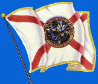
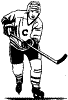
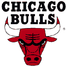

By Dylan Hansen
[Intro|Interests|Florida|Meeting Bure|Grizz vs. Bulls|Edge Fest|Y2K]
Intro
My name is Dylan Hansen. I am 16 years old. My birthday is January 22nd, 1984. I am in Grade 10 at Prince Rupert Senior Secondary School. I do not have any brothers or sisters, and I live with my mom and dad. I have a few aunts and uncles that live in Prince Rupert, as well as some cousins. The rest of my extended family mostly lives in Victoria, Vancouver, Vancouver Island and Alberta. My favorite colour is Blue.
Interests
I have many interests. They include basketball, hockey, computers, the internet, partying, mountain biking and music. Music is probably my most favorite thing in life. I listen to all types of music, but some of my favorite genres are rap, metal, hardcore, rap-metal, punk, alternative and techno. Some of my favorite bands are Limp Bizkit, Korn, Rage Against The Machine, Red Hot Chili Peppers, Incubus and Metallica.
Florida
One of the first significant events that I have had in my life was going on vacation to Florida. When I was there, I had the opportunity to visit Disney World and Universal Studios, both were very cool. I was only about 10 years old and before I went there, I thought Disney World was for babies. It turned out that it wasn't, and I had one of the best times in my life there.
Meeting Bure
A favorite personal experience of mine was when I had the opportunity to meet Vancouver Canuck's star Pavel Bure. At the time, Pavel was my favorite hockey player. I was on vacation with my parents when we were in Vancouver International Airport. We saw a few of the other Canuck's players and got their autograph. My dad asked them if Pavel was around, and we found him coming through customs. My dad stopped him and we got his autograph. I was very happy that he signed my card. That was one of the best days of my life.
Grizz vs. Bulls
Another interesting experience I had was to go to GM Place and watch an NBA game. I got to see the Vancouver Grizzlies play my favorite team, the Chicago Bulls. I was very excited because Michael Jordan is my favorite basketball player, and I had the ability to witness him play. At halftime the Grizzlies were winning, but that was because Jordan didn't play any of the first half. When the second half rolled around, the coach put Jordan in, and he put on a show. I was amazed by the skill and ability he had.
Edge Fest
Another specific even that happened in my life was when I went to Edge Fest in 1997. Edge Fest is a concert with many bands that travels across Canada during the summer. My mom, my cousin and I decided we wanted to go when we were in Vancouver during the summer of 1997. When we got in, my mom sat in the stands and my cousin and I decided to go to the mosh pit. We had to wait there for 2 hours for the bands, but it was worth it. The first few bands were alright, but when my favorite band (at the time), Silverchair, came out I was very excited. They played an awesome show, and I loved moshing to them. My cousin and I got split up in the mosh pit, but we later found each other. We then found my mom who had been waiting for us for at least three hours by the canteen! After we met up, we got food and relaxed as we watched I Mother Earth, The Tea Party, Collective Soul and Our Lady Peace play. That was truly one of the most fun events in my life.
Y2K
The final event that I would like to share was my New Years in 2000. That must of been one of the most fun times in my life! I went to a friends house and partied all night, including the countdown. Almost all of the friends I have were there! After the countdown, a few of my friends came to my house. We stayed up and watched TV 'till 5:00 AM! What a night!
These are the most important events in my life, ones I will never forget!